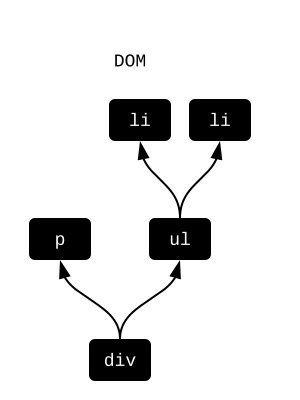
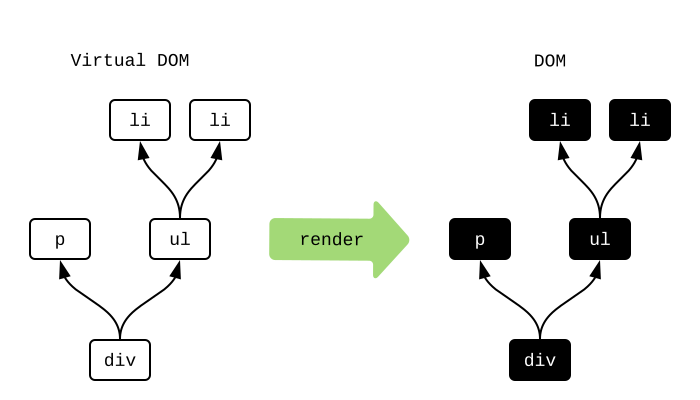
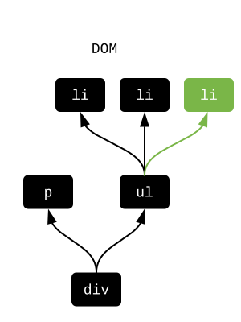

Html.Lazy
Le paquet elm/html est utilisé pour afficher des choses à l'écran. Pour comprendre comment l'optimiser, voyons d'abord comment il fonctionne !
Qu'est-ce que le DOM ?
Lorsque vous créez un fichier HTML, vous écrivez du HTML directement comme ça :
<div>
<p>Parmi les alternatives aux chaises, on trouve :</p>
<ul>
<li>seiza</li>
<li>chabudai</li>
</ul>
</div>
On peut se le représenter comme produisant cette structure DOM en coulisses :

Les boîtes noires représentent des objets DOM lourds avec des centaines d'attributs. Et un changement de n'importe lequel d'entre eux peut déclencher des calculs très coûteux pour redessiner et réarranger le contenu de la page.
Qu'est-ce que le Virtual DOM ?
Si vous créez un fichier Elm, vous utiliserez plutôt elm/html pour avoir ce genre de code :
viewChairAlts : List String -> Html msg
viewChairAlts chairAlts =
div []
[ p [] [ text "Parmi les alternatives aux chaises, on trouve :" ]
, ul [] (List.map viewAlt chairAlts)
]
viewAlt : String -> Html msg
viewAlt chairAlt =
li [] [ text chairAlt ]
On peut voir viewChairAlts ["seiza","chabudai"] comme produisant en coulisse la structure de “DOM Virtuel“ suivante :

Les boîtes blanches représentent des objets JavaScript légers. Ils contiennent uniquement les attributs que vous spécifiez. Leur création n'engendredra aucun calcul pour redessiner et réarranger la page. En bref, comparés aux nœuds DOM, ils sont beaucoup plus légers à allouer !
Render
Si nous travaillons toujours avec ces nœuds virtuels en Elm, comment sont-ils convertis vers le DOM affiché à l'écran ? Au démarrage d'un programme Elm, il se passe les choses suivantes :
- appel à
initpour avoir leModelinitial, - appel à
viewpour avoir les nœuds virtuels initiaux.
Maintenant que nous avons les nœuds virtuels, on en produit une réplique exacte dans le DOM réel :

Parfait ! Mais que se passe-t-il lorsqu'il y a un changement ? Re-construire le DOM en entier à chaque frame ne fonctionne pas. Que pouvons nous faire à la place ?
Calcul de différence
Une fois qu'on a le DOM initial, on travaillera principalement sur les nœuds virtuels. À chaque fois que le Model change, on exécute view à nouveau. À partir de là, on calcule la différence entre le nouveau DOM virtuel et l'ancien afin de trouver comment toucher au DOM réel le moins possible.
Supposons par exemple qu'une nouvelle alternative aux chaises soit listée dans notre Model ; nous voulons alors ajouter un nouveau nœud li pour elle. En coulisses, Elm calcule le diff entre les nœuds virtuels actuels et les suivants pour détecter le moindre changement :

Elm a remarqué qu'un troisième li a été ajouté. Je l'ai dessiné en vert. Elm sait maintenant exactement comment modifier le DOM réel pour le faire correspondre. Il faut juste insérer ce nouveau li :

Ce processus de diff permet de modifier le DOM le moins possible. Et si aucune différence n'est détectée, on ne touche pas du tout au DOM ! Donc ce processus minimise le besoin de redessiner et réarranger le contenu de la page.
Mais peut-on faire encore moins de calculs?
Html.Lazy
Le module Html.Lazy permet de ne même pas construire les nœuds virtuels ! L'idée principale est la fonction lazy (NdT : "lazy" signifie "paresseux" en anglais) :
lazy : (a -> Html msg) -> a -> Html msg
Revenons sur notre exemple de chaises, on avait appelé viewChairAlts ["seiza","chabudai"], mais nous aurions pu appeler lazy viewChairAlts ["seiza","chabudai"] à la place. La version paresseuse alloue alors un seul nœud “paresseux“ :
Le nœud garde juste une référence vers la fonction et les arguments. Elm peut recombiner la fonction et les arguments pour générer toute la structure si nécessaire, mais ce n'est pas toujours nécessaire !
Un des trucs cool avec Elm est cette garantie des fonctions : “même entrée, même sortie“. Donc à chaque fois qu'on rencontre deux nœuds “paresseux“ dans le calcul du diff des nœuds virtuels, on se demande : la fonction est-elle la même ? les arguments sont-ils les mêmes ? S'ils sont tous identiques, on sait que les nœuds virtuels résultants seront également les mêmes ! Donc on peut entièrement économiser la construction des nœuds virtuels ! Si l'un d'eux a changé, on peut construire le nœud virtuel et faire un diff normal.
Note : à quelle condition deux valeurs sont-elles “les mêmes“? Pour optimiser les performances, on utilise l'opérateur
===de JavaScript en coulisses :
- L'égalité structurelle est utilisée pour
Int,Float,String,CharetBool.- L'égalité référentielle est utilisée pour les records, listes, custom types, dictionnaires, etc.
L'égalité structurelle signifie que
4est la même chose que4peu importe comment vous avez produit ces valeurs. L'égalité référentielle signifie que le pointeur en mémoire doit être le même. Utiliser l'égalité référentielle est toujours peu coûteux (enO(1)), même si la structure de données contient des milliers ou millions d'éléments. Tout cela est fait pour s'assurer qu'utiliserlazyne va jamais ralentir énormément votre code par accident. Toutes les vérifications sont vraiment peu coûteuses !
Usage
Le lieu idéal pour utiliser un nœud paresseux est à la racine de votre application. De nombreuses applications ont plusieurs régions visuelles distinctes comme des headers, sidebars, résultats de recherche, etc. Et quand on change une région, on change rarement les autres. Cela appelle naturellement l'utilisation de lazy !
Par exemple, dans mon implémentation de TodoMVC, la fonction view est définie par :
view : Model -> Html Msg
view model =
div
[ class "todomvc-wrapper"
, style "visibility" "hidden"
]
[ section
[ class "todoapp" ]
[ lazy viewInput model.field
, lazy2 viewEntries model.visibility model.entries
, lazy2 viewControls model.visibility model.entries
]
, infoFooter
]
Remarquez que le champ de texte, les entrées et les contrôles sont dans des nœuds paresseux séparés. Donc je peux taper autant de lettres que je veux dans mon champ de texte sans jamais construire le nœud virtuel pour les entrées ou les contrôles. Ils ne changent pas ! Donc le premier conseil est essayez d'utiliser des nœuds paresseux à la racine de votre application.
Il peut également être intéressant d'utiliser lazy dans de longues listes d'éléments. Dans l'application TodoMVC, il est seulement question d'ajouter des entrées dans notre todo list. On peut raisonnablement envisager des centaines d'entrées, mais elles changent très rarement. Il s'agit donc d'un bon candidat pour lazy ! En transformant viewEntry entry en lazy viewEntry entry on peut éviter un paquet d'allocations qui sont rarement utiles. Donc le second conseil est essayez d'utiliser des nœuds paresseux sur les structures répétitives où chaque élément ne change que rarement.
Résumé
Modifier le DOM est bien plus coûteux que n'importe quelle autre opération dans une interface graphique normale. D'après mes tests de performance, vous pouvez faire ce que vous voulez avec des structures de données complexes, mais à la fin, la seule chose importante est votre degré de succès dans l'utilisation de lazy.
Dans la prochaine page, nous verrons une technique pour utiliser lazy encore plus !